Las opciones y servicios que brinda, unido a su meteorología, la convierten en un destino adecuado para toda la familia y diversos perfiles. A esto, además, hay que añadir justo ahora la celebración del V Centenario de la Vuelta al Mundo, un hito histórico en el que Sevilla y Sanlúcar de Barrameda fueron los puntos de partida. Esa aventura de Fernando de Magallanes y Juan Sebastián Elcano convirtió a Andalucía en centro neurálgico del Imperio Español y de Europa. Por eso, arranca ‘Andalucía, Origen y Destino’, un proyecto que se desarrollará en los próximos años ofreciendo al público experiencias desde culturales hasta gastronómicas y así conectarse más con las señas de identidad andaluzas: teatro y ópera tematizas así como menús ‘de la época’ o rutas por el territorio andaluz rememorando la esencia de aquella época.
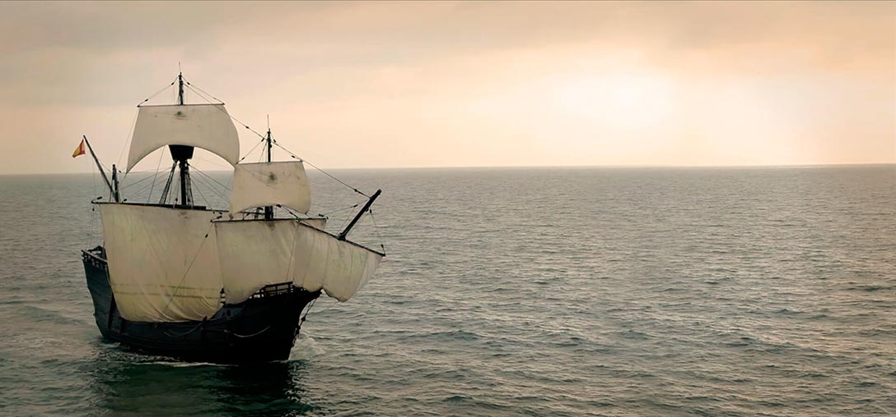
Y es que la historia y sus orígenes son en general parte fundamental del atractivo turístico andaluz. De hecho, su gastronomía, aparte de la amplia variedad que presenta (carne en el interior, deliciosos pescados en los sitios de mar), su gran aceite de oliva, el queso, el jamón, las frutas o las hortalizas frescas, bebe de esa herencia de la cocina árabe al-Andalus que transformó costumbres y ahora se conserva en forma de potajes, guisos o formas de preparar el pescado. Sin olvidar, por supuesto, la importancia actualmente de la comida mediterránea, sana y rica, en todo el mundo y los 18 restaurantes con los que cuenta Andalucía donde sus chefs han recibido la Estrella Michelín, Dani García y Ángel León concretamente dos.
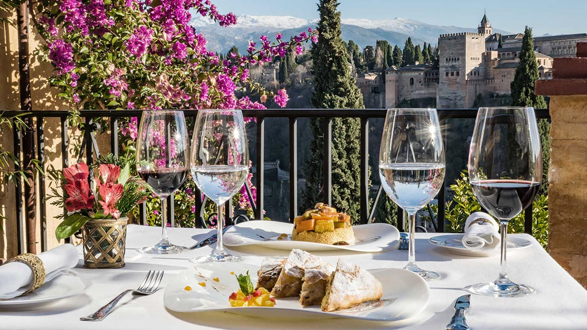
El flamenco, declarado Patrimonio cultural inmaterial de la Humanidad por la UNESCO, ya es algo que trasciende fronteras a nivel internacional. Andalucía es sinónimo de flamenco para gran parte de los visitantes. Por eso, conocer la Historia, las recomendaciones o los artistas más representativos es fundamental.
Como también es cada vez más creciente el interés por el turista medio, y más en estos tiempos de pandemia, el turismo al aire libre, punto fuerte en esta comunidad donde el sol y el buen tiempo es tan frecuente. Unido al hábito generalizado por una vida saludable. Así, el turismo, las rutas en bicicleta son una buena opción durante todo el año tanto en ciudad (las vías verdes de Andalucía) como a las afueras, en el campo (los Alcornocales en Cádiz o en Sierra Nevada, Granada). De hecho, la estación de esquí está a punto de abrir para los apasionados de este deporte. Allí, se han modernizado los accesos y la compra será más barata on line que en taquilla. Ya ha arrancado el sistema de nieve producida y lo remontes están siendo acondicionados para tenerlo todo listo.
En esta línea de deporte y turismo al aire libre, no hay que olvidar que Andalucía es un referente en el mundo del caballo. Hay muchas escuelas y empresas de equitación que brindan la oportunidad de conocer la comunidad a lomos de un caballo, una experiencia única adaptada a cada tipo de viajero y nivel. La labor de la Real Escuela Andaluza del Arte Ecuestre es esencial en este sentido y para fomentar y profundizar sobre el arte ecuestre.
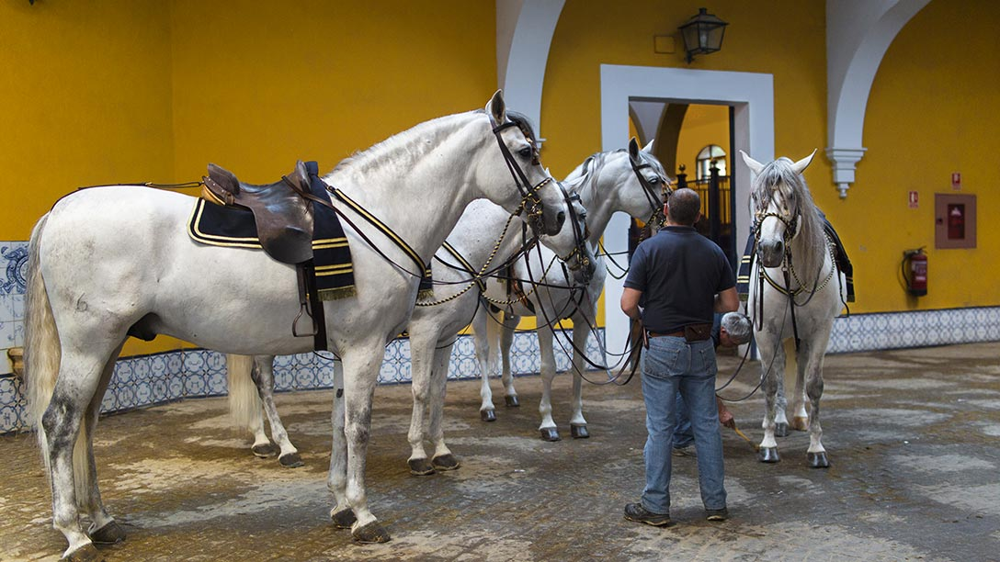
Almería
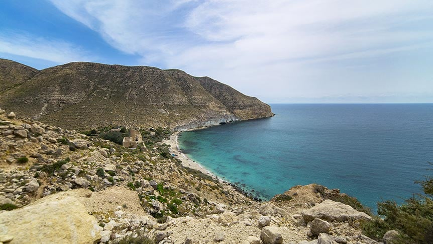
Situada en el sureste, a orillas del Mar Mediterráneo, sus características paisajísticas son inigualables. Razón por la que, además, fue en numerosas ocasiones escenario de la industria cinematográfica. Además y por su situación estratégica, albergó a diversas civilizaciones a lo largo de la Historia, lo que ahora encontramos en sus maravillosos restos arqueológicos, y donde la influencia árabe es la que prevalece a consecuencia de su permanencia. Sin olvidar, por supuesto, el Parque Natural de Cabo de Gata y sus 200 kilómetros de playas de arena blanca y fina y aguas calidad que tanto en poniente como en levante son un destino de calidad para el viajero más exigente gracias a su gran belleza.
Cádiz
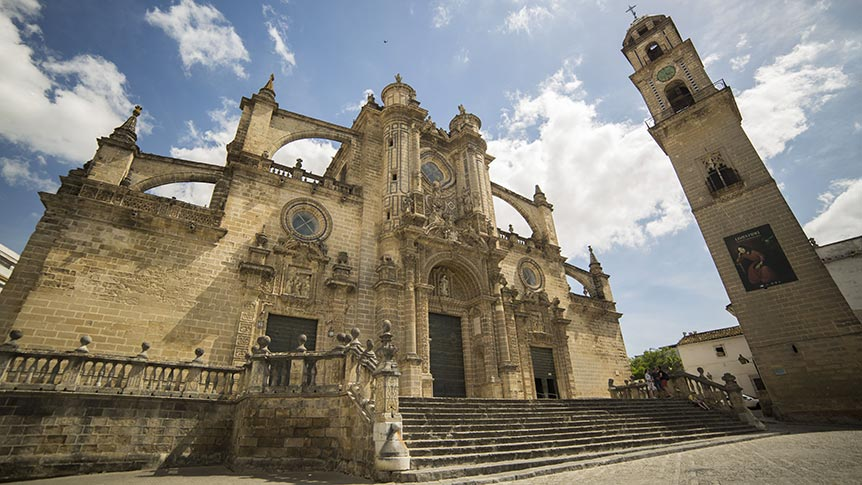
Uno de los destinos más populares para los turistas es Cádiz por su gente y por sus maravillosas playas tanto urbanas como más naturales. Pero es mucho más, es diverso y perfecto para cualquier época del año. A sólo 14 kilómetros de África, fenicios, griegos y romanos pasaron por esta provincia dejando un rico legado. Y aparte de ese turismo de playa y exterior característico (la costa entre Tarifa y Sanlúcar de Barrameda), presenta un turismo de interior igualmente recomendable (las bodegas de Jerez, la Ruta de los Pueblos Blancos o la Ruta del Toro). Además, con la conmemoración del V Centenario de la I Vuelta al Mundo, Sanlúcar será uno de los centros fundamentales del atractivo turístico andaluz.
Córdoba
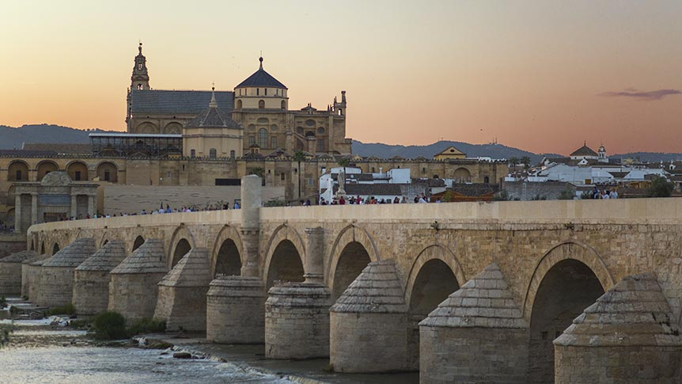
Capital de la España musulmana y situada en el centro de Andalucía y a orillas del Guadalquivir, Córdoba es rica en tradiciones y conserva un gran patrimonio monumental empezando por la maravillosa Mezquita de Córdoba, que tantos visitantes atrae cada año, o el Puente Romano y el yacimiento de Medina-Azahara. Pero también merece la pena detenerse en sus pueblos blancos, sus campos de olivos y viñedos así como su paisaje montañoso como la sierra de Montoro. La gastronomía típica no se queda atrás ahora más que nunca, en pleno auge recuperando el recetario tradicional.
Granada
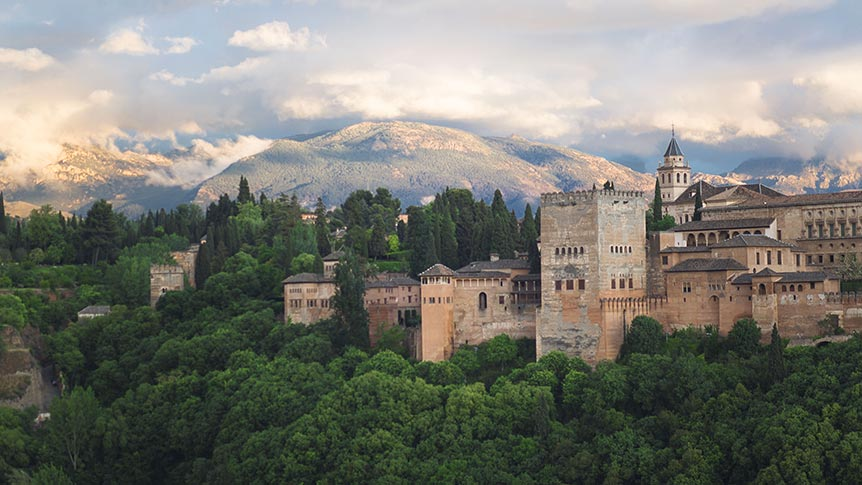
Esta provincia es única por esos altiplanos que descienden desde las cumbres hasta el Mar Mediterráneo, ofreciendo, así un tipo turismo para todos los gustos, donde la montaña con el entorno Natural de Nevada y la estación de esquí de Sierra Nevada, destaca como un destino fundamental para practicar este deporte, senderismo o cicloturismo. Unido a sus pueblos blancos alpujarreños, a las cuevas que recuerdan la vida troglodita y a la bella arquitectura medieval con La Alhambra como protagonista.
Huelva
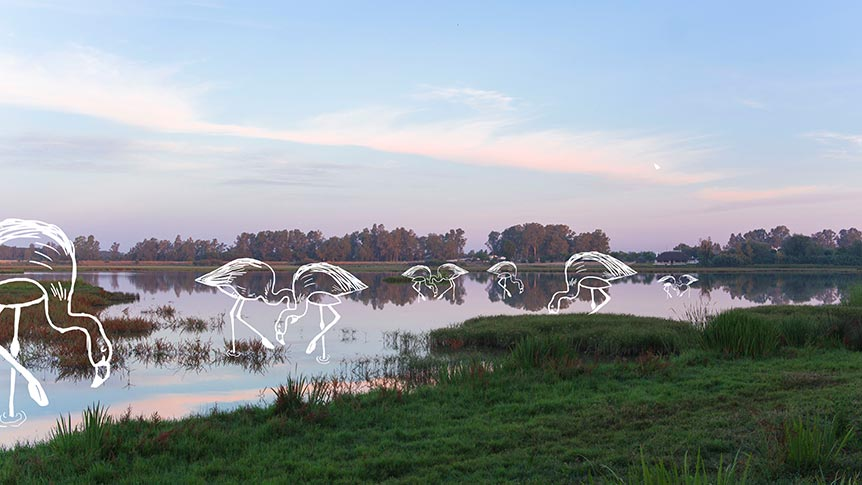
Frontera con Portugal y a orillas del Océano Atlántico, por su situación permite disfrutar del sol y del litoral durante todo el año. Ideal visitar sus pueblos blancos y su naturaleza delicada poblada de encinas que va desde la Sierra Morena hasta el litoral. Recomendables Palos de la Frontera o Moguer así como la Sierra de Aracena. Sin olvidar el Parque de Doñana, donde en Huelva posee su mayor extensión y en invierno acoge una gran diversidad de aves acuáticas en sus marismas dignas de ver. Se considera la mayor reserva natural de Europa. Como colofón, imposible resistirse a sus coquinas, su gamba blanca y su jamón ibérico o ‘pata negra’.
Jaén
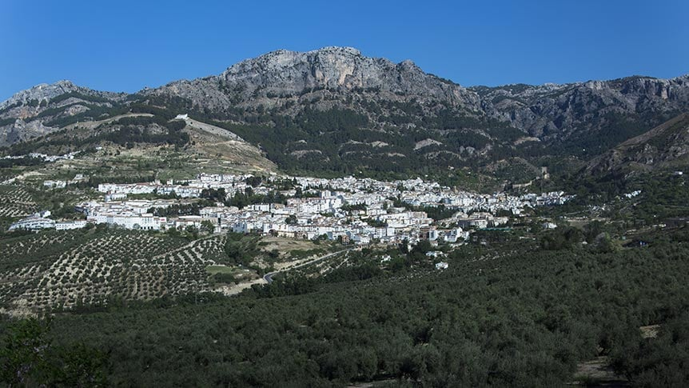
La Puerta de Andalucía, situada al noreste de la comunidad, reúne la monumentalidad en ciudades y pueblos de un gran pasado procedente de fenicios, griegos y cartagineses, y la mayor superficie arbolada continua de España, el Parque Natural Sierras de Cazorla, Segura y Las Villas. Además, el olivar, por supuesto, es protagonista del paisaje de Jaén, de ahí la riqueza del aceite de oliva andaluz, base de la dieta mediterránea. A lo que en esta época navideña se une el resol de café típico: agua, café, hierba luisa, canela en rama, cáscara de limón, aguardiente y azúcar.
Málaga
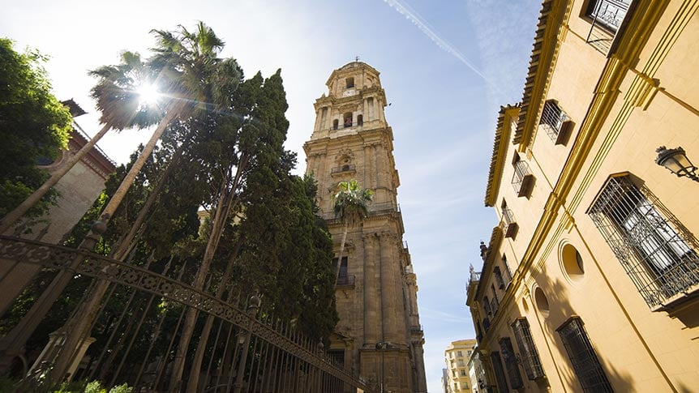
Primera potencia de la industria turística andaluza, es acogedora y allí nunca es invierno por lo que esta época es ideal para su visita. Al sur de la costa mediterránea, sus pueblos blancos son de una bellísima arquitectura, el mar baña concretamente 14 municipios y posee más de 15 espacios protegidos como reserva, paraje o monumento natural.
Sevilla
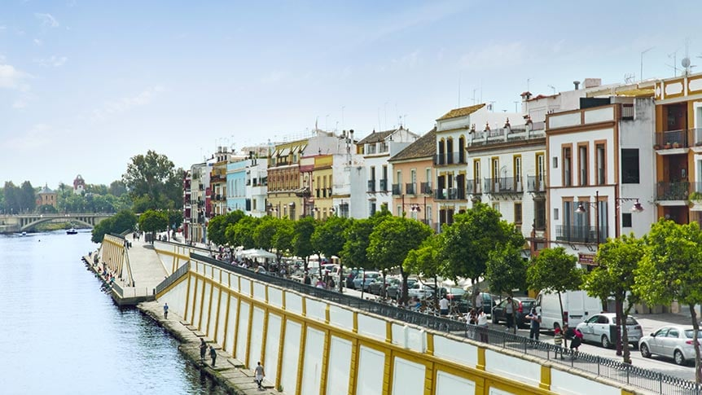
Capital de Andalucía y la provincia más extensa y poblada de Andalucía, sus pueblos y ciudades son fiel reflejo de su pasado histórico y cultural. Un mosaico de culturas donde el visitante podrá a la vez ser testigo de su arquitectura y monumentalidad empezando por la ciudad de Sevilla, pero también de su maravilloso paisaje de grandes humedales a través del Guadalquivir, Sierra Morena y las marismas del Parque Natural de Doñana. Además, sus actividades y eventos artísticos y folclóricos le han ser un destino turístico tanto a nivel nacional como internacional. Y en esta época del año, Estepa se convierte en destino fundamental para conocer cómo se elaborar los dulces navideños.
Contenido ofrecido en colaboración con la Consejería de Turismo de la Junta de Andalucía